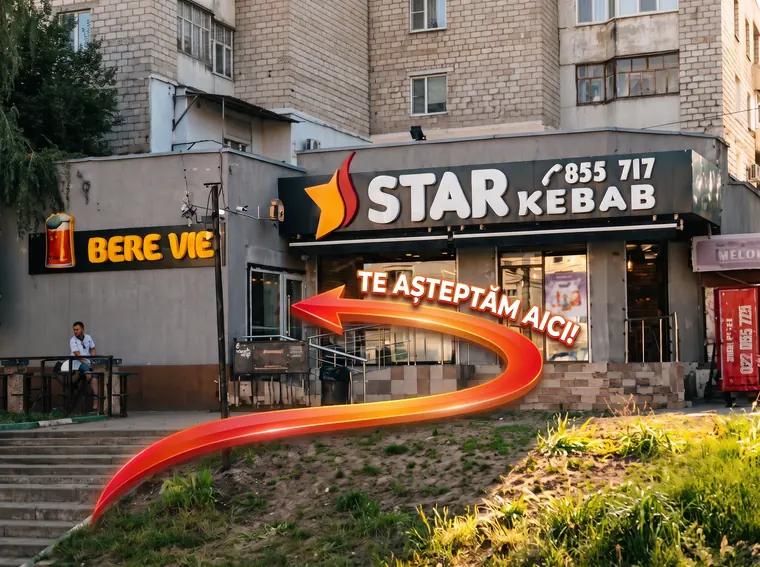

01 / BOTANICA
Cuza Vodă 1/4
Strada Cuza Vodă 1/4, sector Botanica, Chișinău, Republica Moldova.
Program publicat: zilnic, 10:00–22:00.
CONTACT · GYM BEER
Alege locația preferată sau contactează-ne pentru sortimente, gustări și prețurile actuale.

Foto de orientare — urmează indicatorul „Bere Vie” din imagine.
ALEGE MAGAZINUL
01 / BOTANICA
Strada Cuza Vodă 1/4, sector Botanica, Chișinău, Republica Moldova.
Program publicat: zilnic, 10:00–22:00.
02 / BUIUCANI
Strada Alba Iulia 23, sector Buiucani, Chișinău, Republica Moldova.
Programul exact se confirmă direct cu magazinul.
VREI SĂ ÎNTREBI CEVA?
Îți spunem ce sortimente și gustări sunt disponibile, cât costă și cum poți comanda.